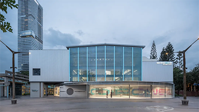

<td align="center" class="tbcolor10" colspan="2" valign="top">
<table border="0" cellpadding="0" height="100%" width="100%">
<tbody><tr><td align="right" height="35px" style="font-size:9pt">
<a href="javascript:window.close()" title="关闭本窗口">关闭窗口</a>｜<a href="print.asp?id=547200" target="_blank" title="打印本页内容">打印张贴版</a>    

</td></tr>
<tr>
<td align="center" height="500" valign="top">
<table border="0" cellpadding="4" cellspacing="0" height="100%" style="border-collapse: collapse;word-break:break-all;" width="86%">
<tbody><tr>
<td align="center" height="80px"><span style="font-family:方正小标宋简体;font-size: 25px;color: #C70E5C">讲座 | 肖诚：社会住宅的发展与当代实践——大师讲堂【2025年度学术讲座系列】</span></td>
</tr>
<tr>
<td align="center" height="50px" style="font-size: 9pt"><font color="#808080">建筑与城市规划学院　2025/5/6 10:24:00</font><br/> 
<font color="#F8F8F8" style="font-size:9pt">（钟沛基 2022280095）</font></td>
</tr>
<tr>
<td height="300" valign="top">
<p class="p" style="text-align: center; margin: 0pt; padding: 0pt;"></p><p class="p" style="margin-top:0.0000pt;margin-right:0.0000pt;margin-bottom:0.0000pt;
margin-left:0.0000pt;padding:0pt 0pt 0pt 0pt ;mso-pagination:widow-orphan;"><b><span class="15" style="mso-spacerun:'yes';font-family:宋体;mso-ansi-font-weight:bold;
font-size:15.0000pt;">讲座题目：社会住宅的发展与当代实践</span></b><b><span class="15" style="mso-spacerun:'yes';font-family:宋体;mso-ansi-font-weight:bold;
font-size:15.0000pt;"><o:p></o:p></span></b></p><p align="justify" class="p" style="margin-top:0.0000pt;margin-right:0.0000pt;margin-bottom:0.0000pt;
margin-left:0.0000pt;padding:0pt 0pt 0pt 0pt ;mso-pagination:widow-orphan;
text-align:justify;text-justify:inter-ideograph;"><b><span class="15" style="mso-spacerun:'yes';font-family:宋体;mso-ansi-font-weight:bold;
font-size:15.0000pt;"><font face="宋体">主</font> <font face="宋体">讲</font> <font face="宋体">人：</font></span></b><span style="mso-spacerun:'yes';font-family:宋体;font-size:15.0000pt;
mso-font-kerning:0.0000pt;">肖诚，深圳华汇设计创始合伙人、首席建筑师；首届深圳市工程勘察设计大师；教授级高级建筑师；中国一级注册建筑师；天津大学兼职教授；英国皇家特许注册建筑师；深圳市规划委员会建筑与环境艺术委员会委员；深圳市专家人才联合会副会长。</span><span style="mso-spacerun:'yes';font-family:宋体;font-size:15.0000pt;
mso-font-kerning:0.0000pt;"><o:p></o:p></span></p><p align="justify" class="p" style="margin-top:0.0000pt;margin-right:0.0000pt;margin-bottom:0.0000pt;
margin-left:0.0000pt;padding:0pt 0pt 0pt 0pt ;mso-pagination:widow-orphan;
text-align:justify;text-justify:inter-ideograph;"><b><span class="15" style="mso-spacerun:'yes';font-family:宋体;mso-ansi-font-weight:bold;
font-size:15.0000pt;">讲座时间：</span></b><span style="mso-spacerun:'yes';font-family:宋体;font-size:15.0000pt;
mso-font-kerning:0.0000pt;">2025年5月7日  19：00-21：00</span><span style="mso-spacerun:'yes';font-family:宋体;font-size:15.0000pt;
mso-font-kerning:0.0000pt;"><o:p></o:p></span></p><p align="justify" class="p" style="margin-top:0.0000pt;margin-right:0.0000pt;margin-bottom:0.0000pt;
margin-left:0.0000pt;padding:0pt 0pt 0pt 0pt ;mso-pagination:widow-orphan;
text-align:justify;text-justify:inter-ideograph;"><b><span class="15" style="mso-spacerun:'yes';font-family:宋体;mso-ansi-font-weight:bold;
font-size:15.0000pt;">讲座地点</span></b><span style="mso-spacerun:'yes';font-family:宋体;font-size:15.0000pt;
mso-font-kerning:0.0000pt;"><font face="宋体">：深大建规学院</font> <font face="宋体">C205 报告厅 </font></span><span style="mso-spacerun:'yes';font-family:宋体;font-size:15.0000pt;
mso-font-kerning:0.0000pt;"><o:p></o:p></span></p><p align="justify" class="p" style="margin-top:0.0000pt;margin-right:0.0000pt;margin-bottom:0.0000pt;
margin-left:0.0000pt;padding:0pt 0pt 0pt 0pt ;mso-pagination:widow-orphan;
text-align:justify;text-justify:inter-ideograph;"><b><span class="15" style="mso-spacerun:'yes';font-family:宋体;mso-ansi-font-weight:bold;
font-size:15.0000pt;">学</span></b><b><span class="15" style="mso-spacerun:'yes';font-family:宋体;mso-ansi-font-weight:bold;
font-size:15.0000pt;">术主持：</span></b><span style="mso-spacerun:'yes';font-family:宋体;font-size:15.0000pt;
mso-font-kerning:0.0000pt;">钟中教授</span><span style="mso-spacerun:'yes';font-family:宋体;font-size:15.0000pt;
mso-font-kerning:0.0000pt;"><o:p></o:p></span></p><p class="p" style="margin-top:0.0000pt;margin-right:0.0000pt;margin-bottom:0.0000pt;
margin-left:0.0000pt;padding:0pt 0pt 0pt 0pt ;mso-pagination:widow-orphan;"><span style="mso-spacerun:'yes';font-family:宋体;font-size:15.0000pt;
mso-font-kerning:0.0000pt;"> </span></p><p align="center" class="MsoNormal" style="text-align:center;"><b><span class="15" style="mso-spacerun:'yes';font-family:宋体;mso-ansi-font-weight:bold;
font-size:15.0000pt;mso-font-kerning:0.0000pt;">嘉宾介绍</span></b><b><span class="15" style="mso-spacerun:'yes';font-family:宋体;mso-ansi-font-weight:bold;
font-size:15.0000pt;mso-font-kerning:0.0000pt;"><o:p></o:p></span></b></p><p class="MsoNormal" style="text-indent: 30pt;"><span style="mso-spacerun:'yes';font-family:宋体;font-size:15.0000pt;
mso-font-kerning:0.0000pt;">肖诚先生是深圳华汇设计的创始合伙人和学术带头人。多年以来他带领公司设计团队持续不断地探索和实践，创作了很多具有代表性的建筑设计作品，并逐渐建立了一种可持续的设计方法。他认为，建筑应当为城市增加厚度，无论是物理层面的，还是精神层面的。好的建筑，生于场地，生成场所。城市与建筑设计的核心价值既体现在为城市创造美好的场所、空间与环境，也体现在为人们创造美好的体验、认知与记忆。</span><span style="mso-spacerun:'yes';font-family:宋体;font-size:15.0000pt;
mso-font-kerning:0.0000pt;"><o:p></o:p></span></p><p class="MsoNormal" style="text-indent: 30pt;"><span style="mso-spacerun:'yes';font-family:宋体;font-size:15.0000pt;
mso-font-kerning:0.0000pt;"><font face="宋体">在多年来的建筑实践中，肖诚获得过多项国际国内重要奖项与荣誉，主要包括亚洲建筑师协会建筑奖金奖两项、全球华人青年建筑师奖、中国勘察设计协会年度行业奖一等奖、中国建筑学会青年建筑师奖、中国建筑学会建筑设计奖一等奖两项、世界华人建筑师协会金奖、美国</font><font face="宋体">A+建筑奖、dezeen设志大奖等众多奖项。</font></span><span style="mso-spacerun:'yes';font-family:宋体;font-size:15.0000pt;
mso-font-kerning:0.0000pt;"><o:p></o:p></span></p><p class="MsoNormal" style="text-align: center; text-indent: 30pt;"><span style="mso-spacerun:'yes';font-family:宋体;font-size:15.0000pt;
mso-font-kerning:0.0000pt;"> </span></p><p class="MsoNormal" style="text-align: center; text-indent: 30pt;"><span style="font-family: 宋体; font-size: 20px; text-align: start;">肖诚</span></p><p class="MsoNormal"><b><span class="15" style="mso-spacerun:'yes';font-family:宋体;mso-ansi-font-weight:bold;
font-size:15.0000pt;mso-font-kerning:0.0000pt;">主要作品：</span></b><b><span class="15" style="mso-spacerun:'yes';font-family:宋体;mso-ansi-font-weight:bold;
font-size:15.0000pt;mso-font-kerning:0.0000pt;"><o:p></o:p></span></b></p><p class="MsoNormal" style="text-align: center;"></p><p class="MsoNormal" style="text-align: center; text-indent: 30pt;"><span style="mso-spacerun:'yes';font-family:宋体;font-size:15.0000pt;
mso-font-kerning:0.0000pt;">南方新住宅：深圳南山建工村公共住房设计竞赛</span></p><p class="MsoNormal" style="text-align: center; text-indent: 30pt;"><span style="font-family: 宋体; font-size: 15pt; text-indent: 30pt;">第一名方案（在建）</span></p><p class="MsoNormal" style="text-align: center; text-indent: 30pt;"></p><p class="MsoNormal" style="text-align: center; text-indent: 30pt;"><span style="mso-spacerun:'yes';font-family:宋体;font-size:15.0000pt;
mso-font-kerning:0.0000pt;">广州蓝山</span><span style="mso-spacerun:'yes';font-family:宋体;font-size:15.0000pt;
mso-font-kerning:0.0000pt;"><o:p></o:p></span></p><p class="MsoNormal" style="text-align: center; text-indent: 30pt;"></p><p class="MsoNormal" style="text-align: center; text-indent: 30pt;"><span style="mso-spacerun:'yes';font-family:宋体;font-size:15.0000pt;
mso-font-kerning:0.0000pt;">深圳万科金域华府</span><span style="mso-spacerun:'yes';font-family:宋体;font-size:15.0000pt;
mso-font-kerning:0.0000pt;"><o:p></o:p></span></p><p class="MsoNormal" style="text-align: center; text-indent: 30pt;"></p><p class="MsoNormal" style="text-align: center; text-indent: 30pt;"><span style="mso-spacerun:'yes';font-family:宋体;font-size:15.0000pt;
mso-font-kerning:0.0000pt;">深圳华侨城香山美墅</span><span style="mso-spacerun:'yes';font-family:宋体;font-size:15.0000pt;
mso-font-kerning:0.0000pt;"><o:p></o:p></span></p><p class="MsoNormal" style="text-align: center; text-indent: 30pt;"></p><p class="MsoNormal" style="text-align: center; text-indent: 30pt;"><span style="mso-spacerun:'yes';font-family:宋体;font-size:15.0000pt;
mso-font-kerning:0.0000pt;">西藏非物质文化遗产博物馆</span><span style="mso-spacerun:'yes';font-family:宋体;font-size:15.0000pt;
mso-font-kerning:0.0000pt;"><o:p></o:p></span></p><p class="MsoNormal" style="text-align: center; text-indent: 30pt;"></p><p class="MsoNormal" style="text-align: center; text-indent: 30pt;"><span style="mso-spacerun:'yes';font-family:宋体;font-size:15.0000pt;
mso-font-kerning:0.0000pt;">合肥北城中央公园文化艺术中心</span><span style="mso-spacerun:'yes';font-family:宋体;font-size:15.0000pt;
mso-font-kerning:0.0000pt;"><o:p></o:p></span></p><p class="MsoNormal" style="text-align: center; text-indent: 30pt;"></p><p class="MsoNormal" style="text-align: center; text-indent: 30pt;"><span style="mso-spacerun:'yes';font-family:宋体;font-size:15.0000pt;
mso-font-kerning:0.0000pt;"><font face="宋体">无锡运河汇</font><font face="宋体">1958</font></span><span style="mso-spacerun:'yes';font-family:宋体;font-size:15.0000pt;
mso-font-kerning:0.0000pt;"><o:p></o:p></span></p><p class="MsoNormal" style="text-align: center; text-indent: 30pt;"></p><p class="MsoNormal" style="text-align: center; text-indent: 30pt;"><span style="mso-spacerun:'yes';font-family:宋体;font-size:15.0000pt;
mso-font-kerning:0.0000pt;"><font face="宋体">深圳华侨城</font><font face="宋体">O • POWER文化艺术中心</font></span><span style="mso-spacerun:'yes';font-family:宋体;font-size:15.0000pt;
mso-font-kerning:0.0000pt;"><o:p></o:p></span></p><p class="MsoNormal" style="text-align: center; text-indent: 30pt;"></p><p class="MsoNormal" style="text-align: center; text-indent: 30pt;"><span style="mso-spacerun:'yes';font-family:宋体;font-size:15.0000pt;
mso-font-kerning:0.0000pt;">深圳前海企业公馆及国际会议中心</span><span style="mso-spacerun:'yes';font-family:宋体;font-size:15.0000pt;
mso-font-kerning:0.0000pt;"><o:p></o:p></span></p><p class="MsoNormal" style="text-align: center; text-indent: 30pt;"></p><p class="MsoNormal" style="text-align: center; text-indent: 30pt;"><span style="mso-spacerun:'yes';font-family:宋体;font-size:15.0000pt;
mso-font-kerning:0.0000pt;">深圳罗湖图书馆和青少年活动中心（在建）</span><span style="mso-spacerun:'yes';font-family:宋体;font-size:15.0000pt;
mso-font-kerning:0.0000pt;"><o:p></o:p></span></p><p class="MsoNormal" style="text-align: center; text-indent: 30pt;"></p><p class="MsoNormal" style="text-align: center; text-indent: 30pt;"><span style="mso-spacerun:'yes';font-family:宋体;font-size:15.0000pt;
mso-font-kerning:0.0000pt;">联泰深圳湾滨海商务中心（在建）</span><span style="mso-spacerun:'yes';font-family:宋体;font-size:15.0000pt;
mso-font-kerning:0.0000pt;"><o:p></o:p></span></p><p class="MsoNormal" style="text-align: center; text-indent: 30pt;"></p><p class="MsoNormal" style="text-align: center; text-indent: 30pt;"><span style="mso-spacerun:'yes';font-family:宋体;font-size:15.0000pt;
mso-font-kerning:0.0000pt;">深圳湾超级总部基地神州数码国际创新中心</span><span style="mso-spacerun:'yes';font-family:宋体;font-size:15.0000pt;
mso-font-kerning:0.0000pt;"><o:p></o:p></span></p><p align="center" class="p" style="margin-top:0.0000pt;margin-right:0.0000pt;margin-bottom:0.0000pt;
margin-left:0.0000pt;padding:0pt 0pt 0pt 0pt ;mso-pagination:widow-orphan;
text-align:center;"><span style="mso-spacerun:'yes';font-family:Calibri;mso-fareast-font-family:宋体;
mso-bidi-font-family:'Times New Roman';font-size:12.0000pt;mso-font-kerning:0.0000pt;"> </span></p><link href="/szu.css" rel="stylesheet" type="text/css"/></td>
</tr>
<tr><td height="0" style="font-size: 9pt"></td></tr>
<tr><td align="right" style="font-size: 9pt">撰稿：钟中、梁舒然　审核：钟波涛、齐奕  <br/>（更新于2025/5/6 10:33:00）<br/> </td></tr>
</tbody></table>
</td>
</tr>
</tbody></table>
</td>
